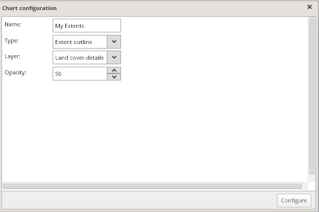
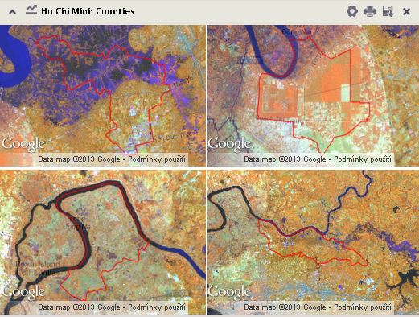
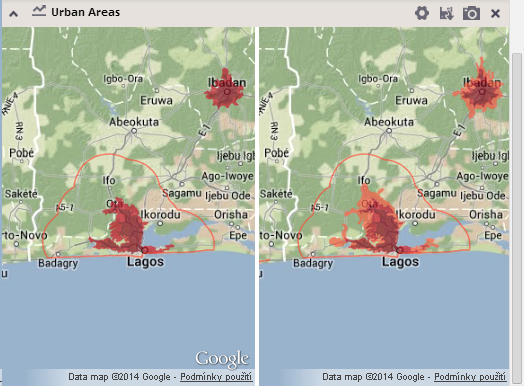
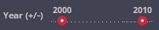
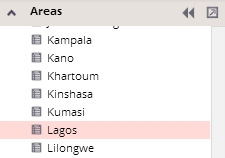

This element provides a possibility to create temporary snapshots of several selected units with selected information layer as a background and to store them in the "Extent outline" panel.
To add this element into the chart panel, click the “Add chart” button  located by the upper left side of the chart panel and select the chart type "Extent outline".
located by the upper left side of the chart panel and select the chart type "Extent outline".
Type the title for this particular extent outlines panel, select the background layer from the list of available information layers and set the opacity for this layer. Confirm these settings by clicking the "Configure" button and the new (meanwhile empty) extent outlines panel will be added into the chart panel.

Then select units whose extents should be added into the "Extent outline" panel, using standard selection methods.
For each of these selected units, a single snapshot with a highlighted outline of the unit appears, along with the selected background layer. Note that if no units are selected, no snapshots can be generated!

Up to four outlines can be drawn in the frame of one session. These overviews could be exported either as graphics or temporarily stored into the snapshots panel as snapshots.
In case more than one year is selected on the year switcher axis, small maps for all years will be displayed in the panel:
